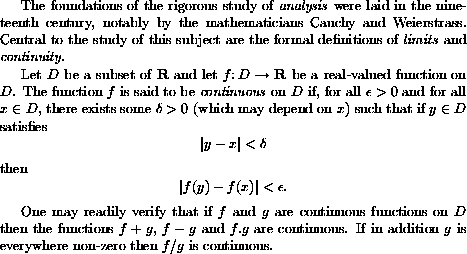

The LaTeX program reads in text from a suitably prepared input file, and creates a `DVI file' which encodes information on the fonts to be used and the positioning of the characters on the printed page. There are many programs available that can translate the `DVI file' into page description languages such as `PostScript', or convert it into the format appropriate for previewing the document on a computer screen or printing it out on dot-matrix printers.
Here is an example of a typical LaTeX input file:
\documentclass[a4paper,12pt]{article}
\begin{document}
The foundations of the rigorous study of \emph{analysis}
were laid in the nineteenth century, notably by the
mathematicians Cauchy and Weierstrass. Central to the
study of this subject are the formal definitions of
\emph{limits} and \emph{continuity}.
Let $D$ be a subset of $\bf R$ and let
$f \colon D \to \mathbf{R}$ be a real-valued function on
$D$. The function $f$ is said to be \emph{continuous} on
$D$ if, for all $\epsilon > 0$ and for all $x \in D$,
there exists some $\delta > 0$ (which may depend on $x$)
such that if $y \in D$ satisfies
\[ |y - x| < \delta \]
then
\[ |f(y) - f(x)| < \epsilon. \]
One may readily verify that if $f$ and $g$ are continuous
functions on $D$ then the functions $f+g$, $f-g$ and
$f.g$ are continuous. If in addition $g$ is everywhere
non-zero then $f/g$ is continuous.
\end{document}
When we apply LaTeX to these paragraphs we produce the text

This example illustrates various features of LaTeX. Note that the lines
\documentclass[a4paper,12pt]{article}
\begin{document}
are placed at the beginning of the input file. These are followed
by the main body of the text, followed by the concluding line
\end{document}
Note also that, although most characters occurring in this file
have their usual meaning, there are characters such
as \, $, { and }
which have special
meanings within LaTeX. In particular, there are
sequences of characters which begin with a `backslash'
\ which are used to produce mathematical symbols and
Greek letters and to accomplish tasks such as changing fonts.
These are known as control sequences.